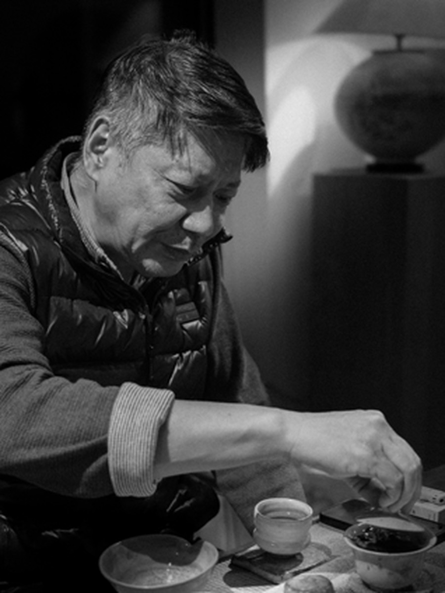
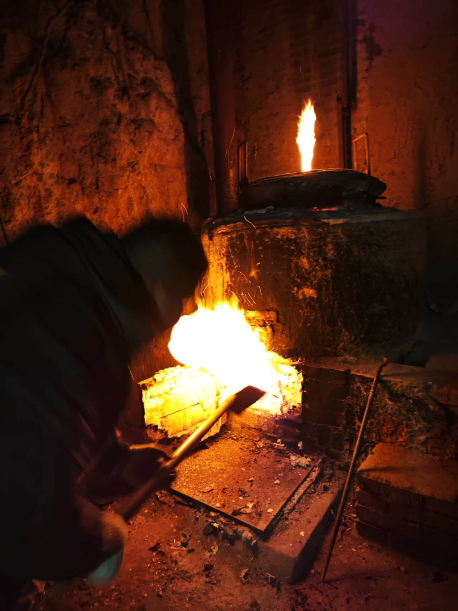

The Masters
Each piece is signed by its maker. Behind every work is a pair of hands and a heart that endures fire.

Yu Wei
"Simplicity and truth, fire and earth in symbiosis — creation never lets technique override the material. It respects the clay and follows the flame."
Yu Wei is the founder of QINGYUAN Naked-Firing Art Space and a student of Chinese ceramic art master Zhang Yongjun. He is a research fellow at the Beijing Folk Art and Intangible Cultural Heritage Research Institute and a member of the China Ceramic Association. Inheriting the orthodox techniques of the northern kilns and the core of Eastern aesthetics, he works through ancient wood-fired naked firing — innovatively building on saggar bodies to create unglazed contemporary ceramics, from the Symbiosis series to the light-and-shadow-driven Light Keeper lamp collection.

Zhang Yongjun
"Respect the nature of the clay and follow the path of the flame — let the piece bloom as it truly is."
Zhang Yongjun is a Chinese ceramic art master — a member of the China Ceramic Industry Association and the Hebei Arts and Crafts Association, a council member of the Cizhou Kiln Research Society, and a first-grade Hebei folk arts and crafts master. He founded his own studio in 1999 and has spent decades on Cizhou tenmoku black-glaze transformation wares. He developed the traditional Cizhou iron-rust speckle transformation glaze and, on that foundation, revived long-lost techniques such as hare's fur, oil spot, and partridge feather — a lasting contribution to Cizhou black-glaze ceramics.
Want a piece by a specific master?
Tell us the style you love, and we'll find the right piece.
Contact